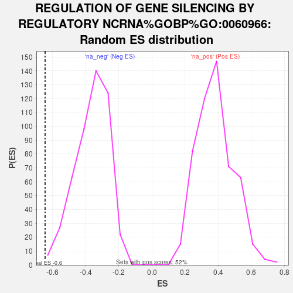

| | | Dataset | GFPPositive_GFPNegative |
| Phenotype | NoPhenotypeAvailable |
| Upregulated in class | na_neg |
| GeneSet | REGULATION OF GENE SILENCING BY REGULATORY NCRNA%GOBP%GO:0060966 |
| Enrichment Score (ES) | -0.6451318 |
| Normalized Enrichment Score (NES) | -1.777063 |
| Nominal p-value | 0.004158004 |
| FDR q-value | 0.4689766 |
| FWER p-Value | 0.993 |
Table: GSEA Results Summary
 Fig 1: Enrichment plot: REGULATION OF GENE SILENCING BY REGULATORY NCRNA%GOBP%GO:0060966
Fig 1: Enrichment plot: REGULATION OF GENE SILENCING BY REGULATORY NCRNA%GOBP%GO:0060966
Profile of the Running ES Score & Positions of GeneSet Members on the Rank Ordered List
| SYMBOL | RANK IN GENE LIST | RANK METRIC SCORE | RUNNING ES | CORE ENRICHMENT | | 1 | ZC3H10 | 2844 | 0.533 | -0.1094 | No |
| 2 | RIPK1 | 4666 | 0.267 | -0.1852 | No |
| 3 | TARBP2 | 5378 | 0.201 | -0.2073 | No |
| 4 | TGFB1 | 5820 | 0.167 | -0.2177 | No |
| 5 | PUM2 | 5909 | 0.161 | -0.2098 | No |
| 6 | ZFP36 | 6595 | 0.112 | -0.2374 | No |
| 7 | FXR1 | 8671 | -0.007 | -0.3471 | No |
| 8 | TIAL1 | 8749 | -0.011 | -0.3503 | No |
| 9 | ELOB | 8859 | -0.016 | -0.3548 | No |
| 10 | PRKRA | 9330 | -0.040 | -0.3766 | No |
| 11 | ZSWIM8 | 9490 | -0.049 | -0.3812 | No |
| 12 | PUM1 | 10216 | -0.090 | -0.4127 | No |
| 13 | STAT3 | 10305 | -0.095 | -0.4099 | No |
| 14 | ELOC | 10818 | -0.123 | -0.4275 | No |
| 15 | BMP4 | 14920 | -0.468 | -0.6087 | Yes |
| 16 | DGCR8 | 15380 | -0.529 | -0.5918 | Yes |
| 17 | ELAVL1 | 16294 | -0.679 | -0.5873 | Yes |
| 18 | LIN28B | 16299 | -0.680 | -0.5345 | Yes |
| 19 | BCDIN3D | 17399 | -0.944 | -0.5193 | Yes |
| 20 | FMR1 | 17772 | -1.100 | -0.4533 | Yes |
| 21 | TRUB1 | 18096 | -1.287 | -0.3701 | Yes |
| 22 | LIN28A | 18861 | -5.268 | 0.0001 | Yes |
Table: GSEA details [plain text format]

Fig 2: REGULATION OF GENE SILENCING BY REGULATORY NCRNA%GOBP%GO:0060966: Random ES distribution
Gene set null distribution of ES for REGULATION OF GENE SILENCING BY REGULATORY NCRNA%GOBP%GO:0060966